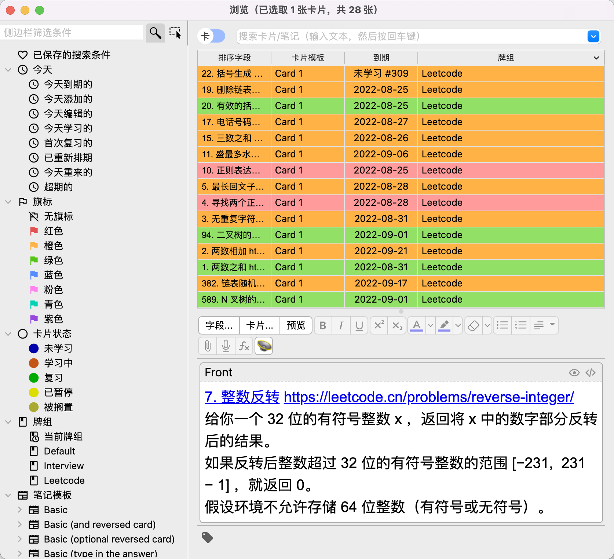
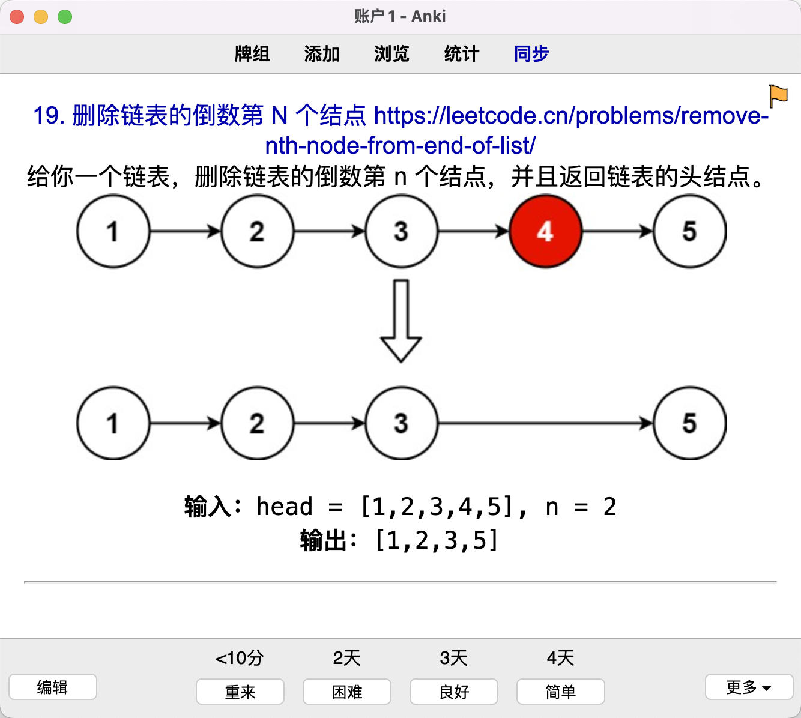

我从上个月 26 号开始每天做 1-2 道 leetcode 算法题，到今天刚好一个月时间。当时在 github 上建了个私有仓库，今天也公开了，其中一个目的也是为了每天督促自己。之前不想公开的原因是担心后边真的有面试的时候面试官认为我是个刷题选手，但是 whatever 无所谓了，反正短期内也没打算换工作。
https://github.com/Panmax/go-leetcode
我从毕业刚工作开始面试就没有在刷算法题上下过功夫，觉得意义不是很大，到现在也是这么认为。
这次开始做题的目的是考虑到人过了 30，记忆力和思维力都不如年轻时候了，所以需要一些刻意练习，在这里记录一下做算法题的过程。每天写写题倒不是为了去面试，而是为了保持思维的敏捷，语法的熟练，以及对算法的理解。
做题的另一个契机是公司每隔一段时间会抽一些人去写三道算法题，评估下公司研发人员的平均水平，这给了我一个开始的提示。最近刚好在读一本书：《福格行为模型》，里边提到开始一个行为需要是三个要素：动机+能力+触发器。我的触发器是公司的水平测验，动机是提升自己思维敏感度，能力方面自己还是不错的，所以最终促成了这个行为的实施。
我不是每天疯狂的做新题，毕竟不是为了突击面试，而是每天做 1-2 道新题（根据题的难易程度而定），回顾 3-4 道之前的题目。所以在每个目录下可以看到一个 main.go 文件是我第一次做这道题的代码，其他 review_<日期>.go 文件是我复习的代码。
比如 206-reverse-linked-list 目录，意思是 leetcode 里的第 206 道题，我在 8 月 2 号、8 月 5 号、8 月 15 号复习过。
1 | . |
当天该复习哪道题是我通过 Anki 来记录的，Anki 根据我对每道题的掌握程度会在不同的时间点提醒我复习。
做题的顺序是找了一个 leetcode 组合好的题库，目前做的是这个库： https://leetcode.cn/problem-list/2cktkvj/
我每做一道题就在 Anki 里新增一道，同时给这个题标记不同的颜色，绿色为 easy、橙色为 middle、红色为 hard。

做完一道题后我会给这道题一个主观的难易评价，Anki 会决定我下一次的复习时机。

尝试了一个月，每天抽出来一小时写写题，目前已经转起来了，我相信自己可以一直做下去。